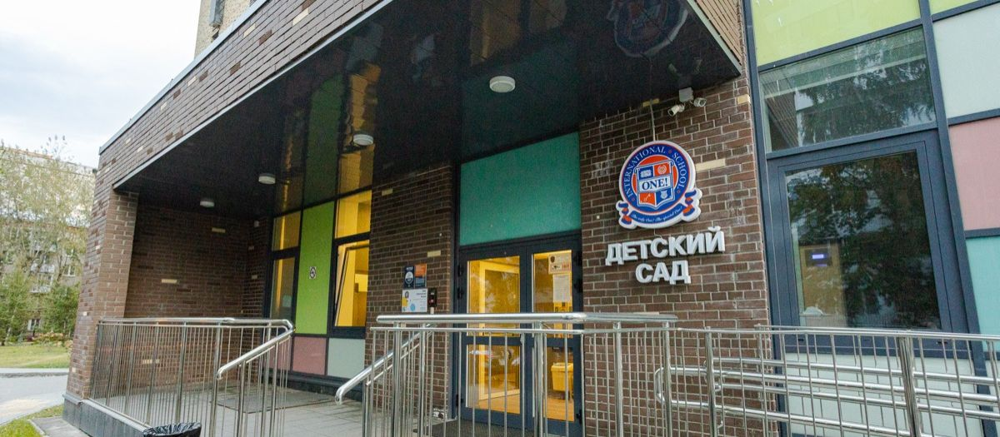

Рейтинг частных школ Москвы: десять школ и как их сравнивать

 Статью написал педагог ONE!Белов Дмитрий Сергеевичучитель математики20 лет практики
Статью написал педагог ONE!Белов Дмитрий Сергеевичучитель математики20 лет практики
Частные школы работают по стандартам ФГОС, но за счёт небольших классов педагоги уделяют внимание каждому ученику, и индивидуальный подход создаёт комфортную для учёбы атмосферу. Выбрать школу помогает рейтинг Forbes Education: ниже десять школ из него с тем, что важно знать родителям о каждой, и короткая инструкция, как читать любой рейтинг и не ошибиться с выбором.

- Рейтинг это инструмент для списка из пяти-семи школ. Выбирать одну нужно уже на экскурсии.
- У каждой школы из списка свой профиль: языки, самостоятельность, международные программы, спорт, профили в старших классах. Сравнивайте под ребёнка.
- Пять цифр, которые стоит собрать по каждой школе: балл ЕГЭ за три года, учеников в классе, часов английского, полная стоимость года, аккредитация.
01Как читать рейтинг
Рейтинги составляют по разным правилам. Forbes Education учитывает академические результаты, поступление в вузы, стоимость, инфраструктуру и экспертные оценки. RAEX смотрит на поступление выпускников. Рейтинги по ЕГЭ и олимпиадам учитывают только выпуск. Школа из первой тройки одного списка может не попасть в другой, поэтому рейтинг нужен для одного: отобрать школы, до которых реально доехать, и дальше смотреть своими глазами.
02ONE! International School
Школа международного уровня с филиалами в нескольких странах. С первого класса дети углублённо изучают английский язык и информатику. Помимо штатных педагогов занятия ведут носители языка. Кроме английского в школе изучают китайский. Ученики занимают призовые места на олимпиадах по разным предметам. ONE! первой в Москве начала преподавать основы предпринимательства с первого класса.
Три направления обучения, которые подбирают каждому ученику по итогам собеседования и тестирования:
- углублённое изучение программирования и математики;
- углублённое изучение иностранных языков с носителями, по окончании ученик готов сдать международный экзамен любого уровня;
- творческое направление: технологии, рисование, основы дизайна.
Больше 25 секций дополнительных занятий: спортивные, боевые искусства, танцы от классических до современных, углублённое изучение школьных предметов, арт-мастерские, программирование и робототехника. Регулярно проходят мастер-классы, есть групповые и индивидуальные занятия. Уровень образования позволяет поступать в ведущие международные вузы.
Дети делают уроки в течение дня, все учебные материалы хранятся в школе, тяжёлый рюкзак носить не нужно. Работают подготовительные группы для детей 5-7 лет: грамота, письмо, мотивация к учёбе, а также факультативы по иностранным языкам, спорт и арт-мастерская для дошкольников.
03Ещё девять школ из рейтинга
Основана в 2013 году. Обучение построено на принципах ровесничества: занятия проходят не только за партами, но и на диванах и пуфах, ученики общаются с преподавателями на равных. Установленного графика нет, каждый выбирает план учёбы с помощью тьютора. Для поступления нужно собеседование с приёмной комиссией и платное тестирование. Бюджетных программ нет, но за призовое место в олимпиаде дают стипендию от 10 до 100% стоимости. Основное питание входит в цену, дополнительное в столовой. Есть школьный автобус. Оценивание от 2 до 4 баллов: 2 это усвоение материала, 4 это углублённые знания с исследовательской работой. С 8 по 11 класс профили, предметы ученик выбирает сам. Домашних заданий нет, есть самостоятельная работа во второй половине дня. Телефонами пользоваться нельзя: с 5 класса гаджеты сдают дежурному. Не реже раза в неделю экскурсии, они входят в стоимость, длительные поездки оплачиваются отдельно. Кружки открыты и для детей, которые в школе не учатся.
Образование по британским стандартам с углублённым английским. Две программы. Русская: полностью соответствует российским стандартам, курс расширен, больше дисциплин, регулярные практические занятия по основам дизайна, кулинарии, музыке и театру, оценки по общей системе. A-level: соответствует программе IB, учит применять знания в жизни, развивает критическое мышление и мотивацию к учёбе. Зачисление после тестирования по английскому, русскому и математике и собеседования. Пятиразовое питание. Основные занятия до 14:00, дальше кружки. Домашних заданий нет. Каждому ученику нужен ноутбук.
Программа составляется для каждого ученика индивидуально. Цель не только знания, но и самостоятельность, индивидуальность, ответственность и свобода выбора. Конкурса нет, зачисление в порядке очереди после тестирования и собеседования с психологом. Спортивные кружки, робототехника и иностранный язык оплачиваются отдельно. При переходе в среднюю школу ученики выбирают направление: научное или языковое, во втором случае обучение полностью на английском. По окончании можно сдать ЕГЭ или международные экзамены для зарубежного вуза. Есть онлайн-формат: основную программу осваивают дистанционно, несколько раз в неделю очные практики и семинары.
Задача школы создать комфортную атмосферу и развивать самостоятельность. Углублённый английский. При школе детский сад, где язык начинают с 3 лет. Медицинское обслуживание входит в стоимость. Домашние задания делают во второй половине дня под контролем педагога. Спортивные секции, театр, ИЗО, олимпиады, экскурсии, конференции и поездки за границу. У школы есть резиденция на Кипре для летних каникул. Обучение по российским стандартам, в IB школа не участвует, выпускники сдают ЕГЭ и ОГЭ.
Начиналась с детского сада и начальной школы, со временем появились средняя и старшая. Корпуса в разных районах. Бассейн, спортивная площадка, после уроков факультативы и кружки. В младшей школе прогулки на закрытой территории под присмотром охраны и педагога. При неуспеваемости учителя занимаются с детьми индивидуально. Переходные экзамены ежегодно. С 7 класса ученики выбирают дисциплины сами, с 10 класса профили. Школа сотрудничает с Кембриджским университетом, после международных экзаменов можно продолжить учёбу за рубежом. Есть заочная форма, удобная для спортсменов и часто болеющих детей.
Школа и частный детский сад на одной территории. Помимо английского изучают немецкий и французский на выбор. Многие предметы ведут по авторской методике. В старших классах углублённое изучение по направлению для поступления в вуз, профилей пять: гуманитарный, лингвистика, химия и биология, физико-математический, экономика. Спортивные секции, музыкальные кружки и свой театр, спектакли на русском и английском, участие в международных конкурсах. Помимо ГИА и ЕГЭ можно сдать международные экзамены, школа сотрудничает с Кембриджским университетом. Принимают детей с ограниченными возможностями по индивидуальной программе, при необходимости работают психолог, дефектолог и логопед.
Основана в 1992 году. Направленность на иностранные языки, их пять: английский, французский, немецкий, испанский, китайский. Основной английский с 1 класса, с 4 класса второй по выбору. В средней школе зарубежные стажировки. В старших классах профиль: гуманитарный или экономический. Основная часть кружков это спортивные секции для разного возраста, физической активности уделяют много времени. Есть подготовка к школе для детей 5-7 лет в игровой форме, при необходимости работают психолог и логопед.
Главный принцип это самостоятельность: с первого класса дети учатся делать выбор и работают над индивидуальными проектами, учитель объясняет, направляет и поощряет. Перед 10 классом ученики сами выбирают предметы, от необязательных по ФГОС дисциплин можно отказаться. Курсы разной направленности для детей и взрослых, мастер-классы, лекции и открытые уроки, на выходных мероприятия для родителей с детьми, в каникулы поездки, в том числе за рубеж. Есть стипендия от благотворительного фонда для семей с невысоким достатком, размер определяется индивидуально. С детьми работают тьюторы: помогают разобраться в причинах неуспеваемости, мотивируют, налаживают отношения в коллективе и с родителями.
Работает в Москве с 1991 года, есть филиалы в Казахстане, Чехии и Финляндии. Принцип: раскрытие и развитие талантов, учёба по индивидуальной программе. Три формы: очная, заочная и смешанная. Школа в экологически чистой зоне, учеников доставляет школьный транспорт. При школе ясли от 1 года, детский сад и курсы дошкольной подготовки. Ученики участвуют в марафонах, олимпиадах, открытых уроках. Помимо предметов ФГОС преподают дополнительные. В старших классах профили: математика, иностранный язык, гуманитарные науки. Выпускники выходят с английским уровня Upper-Intermediate, сдают международные экзамены, поступают в вузы и работают в зарубежных компаниях. Конкурсы, творческие вечера и открытые уроки часто проходят на иностранном языке, летом можно поехать в англоязычную страну за языковой практикой.
04Как сравнивать школы из списка
Описания выше это то, что школы рассказывают о себе. Чтобы сравнить их честно, соберите по каждой пять цифр и три впечатления.
Цифры:
- Средний балл ЕГЭ за три последних года. Один год может быть случайностью.
- Сколько учеников в классе сейчас, в нужной вам параллели.
- Часы английского в неделю и доля педагогов-носителей.
- Полная стоимость года: оплата, взносы, питание, форма, кружки сверх программы. Как считать, в статье «Сколько стоит частная школа в Москве».
- Государственная аккредитация и лицензия. Без аккредитации школа не выдаёт аттестат.
Впечатления: урок в учебное время, разговор с учителем, к которому попадёт ребёнок, и разговор с родителями учеников. Список вопросов для экскурсии собрали отдельно: «Что спросить на экскурсии по школе: 25 вопросов».
| Критерий | Школа 1 | Школа 2 | Школа 3 |
|---|---|---|---|
| Средний балл ЕГЭ, 3 года | |||
| Учеников в классе сейчас | |||
| Английский, часов в неделю | |||
| Полная стоимость года | |||
| Аккредитация | |||
| Дорога, минут | |||
| Впечатление от урока |
Цифры, которые мы показываем на экскурсии: средний балл ЕГЭ 82 при 68 по Москве, 12 из 16 выпускников 2025 года набрали больше 80 баллов по русскому, классы до уточнить: число] учеников, до 10 часов английского в неделю с педагогами-носителями, кембриджские экзамены сдают с первого раза 87% учеников. Полная разбивка по предметам и годам на [странице статистики. Школы ONE! входят в рейтинг Forbes Education [уточнить: год и позиция].
05Частые вопросы
По цифрам поступления RAEX, по совокупности критериев Forbes Education. Школа, которая есть в обоих, прошла две разные проверки.
Нет. Школы с жёстким отбором рассчитаны на сильных и самостоятельных детей. Ребёнку, которому нужен спокойный темп, в такой школе может быть тяжело.
Как списку школ можно, как оценке качества нет. Проверяйте, указана ли методика. Если её нет, это реклама.
Пять-семь на этапе списка, две-три на этапе экскурсий. Больше не нужно: впечатления начинают смешиваться.
06Что дальше
Если ONE! попал в ваш список, приходите на экскурсию в учебный день: покажем урок, познакомим с педагогом и дадим таблицу полной стоимости года. Запись на странице поступления или по телефону +7 (495) 152-22-21.